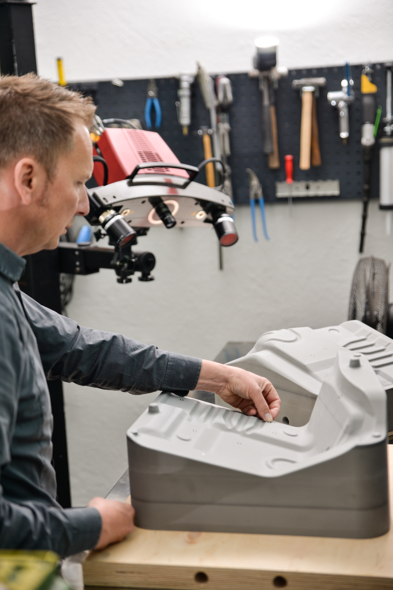

.png)
HÄUFIGE
FRAGEN
Was benötigen Sie als Vorlage? Reicht das alte Bauteil aus?
Ja, in den meisten Fällen ist das Originalteil – auch wenn es beschädigt ist – die beste
Vorlage. Mit unserem hochauflösenden 3D-Scanner digitalisieren wir das Bauteil und
können Defekte oder Verschleiß am Computer korrigieren.
Mit welchen Kosten muss ich rechnen?
Die Kosten sind individuell (Komplexität, Größe, Material). Sie erhalten immer ein
festes Angebot nach Analyse. Bedenken Sie: Es ist eine Investition in eine Lösung, die
anderswo nicht existiert.
Wie lange dauert der Prozess?
Ein typisches Projekt (Scan bis Bauteil) dauert ca. 6 Wochen. Wir geben aber immer einen
realistischen Zeitplan vorab.
Welche Marken unterstützen Sie?
Jede Marke. Spezialisiert sind wir auf Porsche, Mercedes-Benz, Jaguar, Ferrari, Aston
Martin und viele mehr.
Wie stellen Sie die Passgenauigkeit sicher?
Durch den digitalen Prozess: 1. Scan (Hundertstel mm genau). 2. CAD-Konstruktion. 3.
Werkzeugbau auf Basis dieser Daten. 4. Soll-Ist-Vergleich des fertigen Teils.

Unser Prozess: Vom Scan zur Datei, vom Werkzeug zum Blech.